The problem is not cooking. It is the friction around cooking.
A kitchen can feel frustrating even when you know what you want to make. The slow parts are usually smaller than people think: the meat temperature is a guess, spices are buried, greens are wet, garlic prep is annoying, the sink area is cluttered, and the stovetop is hard to clean afterward.
That is why smart kitchen products should not be random. Each one should remove one repeated problem. When the repeated problems get easier, cooking feels less like a chore.
Signs your kitchen routine needs smarter tools
- You avoid cooking because prep feels longer than the actual meal.
- You guess food temperature instead of checking it.
- Spices, rice, produce, or lunch prep keep turning into clutter.
- The sink or stovetop looks messy even after basic cleaning.
- You want quick meals and snacks without pulling out large appliances.
What is really happening?
Most kitchens do not need more random gadgets. They need better tools for repeated moments: checking doneness, making eggs, cooking small meals, storing dry goods, organizing spices, drying greens, cleaning the sink area, and keeping the stovetop manageable.
The products below are grouped by the job they actually do, so the recommendation feels natural instead of forced.
Start with the task that makes you avoid cooking.
Give food, spices, and sink tools a cleaner place to go.
Choose products you can use every week, not once.
The simple routine that makes sense
Pick one kitchen pain point first. If you ruin meat by guessing, start with temperature. If mornings are chaotic, start with eggs or quick breakfast. If the pantry is messy, start with rice or spices. If cleanup blocks you from cooking, start with the sink or stovetop.
Good kitchen products do not need to be dramatic. They just need to make a repeated task faster, cleaner, or easier.
Products that fit the solution
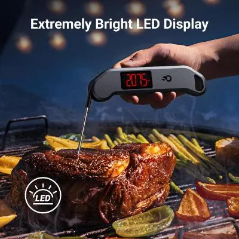
ThermoMaven Digital Meat Thermometer
Overcooked chicken, underdone meat, and guessing temperatures can ruin a meal. A fast thermometer gives you a clear answer instead of relying on cutting food open or guessing.
Best fit: grilling, roasting, chicken, steak, meal prep, and anyone who wants fewer cooking mistakes.
View Product on Merchant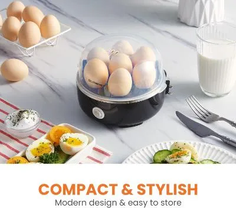
Elite Gourmet Electric Egg Cooker
Eggs are simple, but they still need timing and attention. An egg cooker makes boiled eggs and quick breakfasts easier to repeat without standing over the stove.
Best fit: busy mornings, meal prep, small kitchens, and quick protein snacks.
View Product on Merchant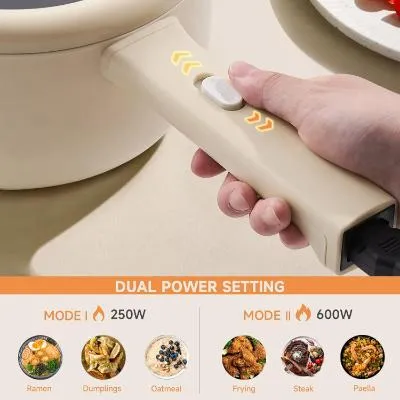
DEZIN 2L Electric Hot Pot / Mini Cooker
Not every kitchen has space for a full setup. A compact electric hot pot helps with noodles, soups, simple meals, dorm cooking, and small-space routines.
Best fit: dorms, offices, small apartments, quick meals, and compact cooking setups.
View Product on Merchant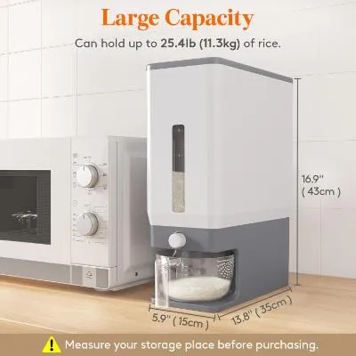
Lifewit Rice Dispenser
Rice bags and grain bags get messy fast. A dispenser keeps dry staples organized, easier to portion, and cleaner than open bags sitting in the pantry.
Best fit: rice, dry grains, pantry organization, and households that cook staples often.
View Product on Merchant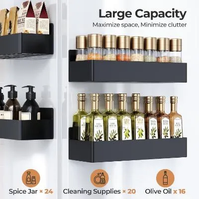
Mystozer Magnetic Spice Rack
When spices are buried in a cabinet, cooking slows down before it starts. A magnetic spice rack turns the fridge side into reachable kitchen storage without drilling.
Best fit: small kitchens, spice clutter, renters, and people who want seasonings visible.
View Product on Merchant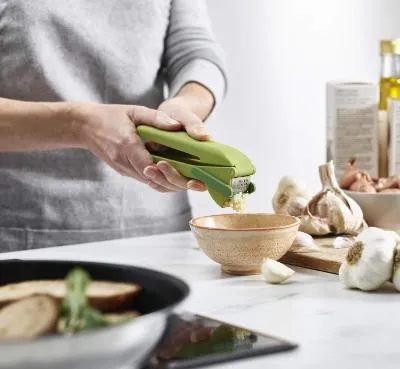
Joseph Joseph CleanForce Garlic Press
Garlic adds flavor, but mincing it and cleaning the tool can be annoying. A better garlic press saves prep time and reduces the cleanup headache.
Best fit: home cooks who use garlic often and want faster prep.
View Product on Merchant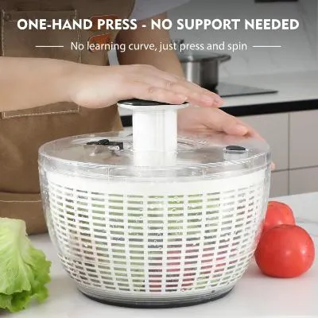
Ourokhome One-Hand Salad Spinner
Wet greens make salads soggy and slow down prep. A salad spinner helps rinse and dry greens, herbs, and produce more efficiently.
Best fit: salads, herbs, meal prep, and people trying to eat fresher food at home.
View Product on Merchant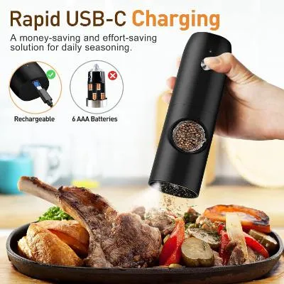
Electric Salt & Pepper Grinder Set
Seasoning while cooking can be awkward when your hands are busy. Electric grinders make seasoning easier and cleaner during prep or serving.
Best fit: cooking, dinner tables, one-handed seasoning, and cleaner countertop setups.
View Product on Merchant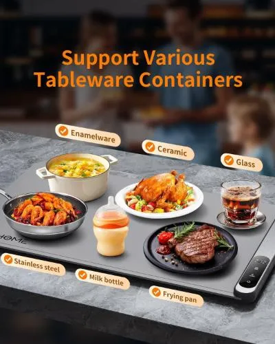
Electric Warming Tray
Food gets cold when dishes finish at different times. A warming tray helps keep meals warm during hosting, family dinners, and buffet-style serving.
Best fit: hosting, family meals, holidays, and keeping dishes warm before serving.
View Product on Merchant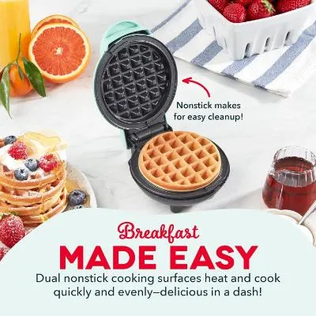
DASH Mini Waffle Maker
A mini waffle maker is useful when you want fast breakfasts, snacks, or small portions without pulling out larger equipment.
Best fit: small kitchens, kids snacks, quick breakfasts, and compact appliance setups.
View Product on Merchant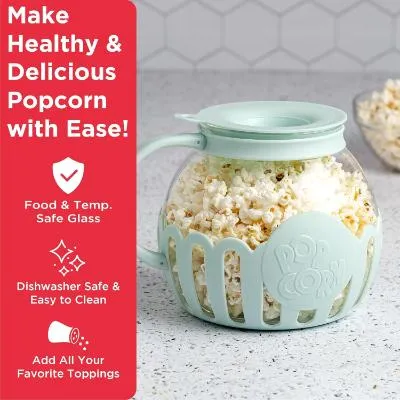
Ecolution Microwave Popcorn Popper
Disposable popcorn bags are convenient, but a reusable popper gives you a cleaner repeatable snack routine with more control over ingredients.
Best fit: movie nights, snack prep, reusable kitchen tools, and families.
View Product on Merchant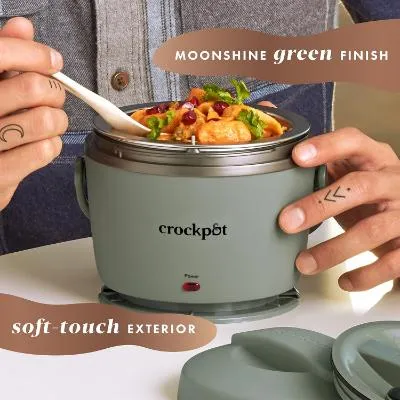
Crock-Pot Portable Electric Lunch Box
Packed meals are less useful if you cannot heat them easily. A portable electric lunch box helps warm food at work, school, or on the go.
Best fit: work lunches, school, travel days, and people without easy microwave access.
View Product on Merchant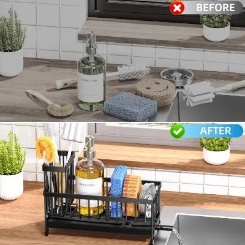
Cisily Kitchen Sink Organizer
A messy sink area makes the whole kitchen feel dirtier. A sink organizer keeps sponges, brushes, and dish tools together instead of scattered around the counter.
Best fit: dish tools, sponge storage, small sinks, and cleaner kitchen counters.
View Product on Merchant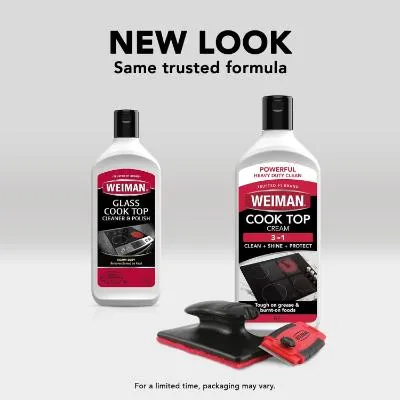
Weiman Cooktop Cleaner Kit
Cooktops collect stuck-on mess fast. A dedicated cleaner kit helps remove residue and keeps glass or ceramic stovetops looking cleaner.
Best fit: glass cooktops, ceramic stovetops, cooking residue, and routine kitchen cleaning.
View Product on Merchant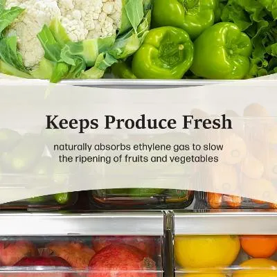
Moso Natural Fridge Odor Eliminator
Even a clean fridge can hold food smells. A fridge deodorizer helps absorb unwanted refrigerator odors without sprays or plug-ins.
Best fit: fridges, food odors, meal prep, and simple kitchen freshness.
View Product on MerchantFAQ
What kitchen products are actually worth it?
Products that solve a repeated kitchen problem: temperature checks, breakfast prep, pantry storage, spice access, produce washing, sink clutter, stovetop cleanup, or food freshness.
Should I add all of these products at once?
No. Start with the one problem you deal with most often. A few useful tools are better than a drawer full of random gadgets.
Why are these products linked to Top Finds?
Because several stronger kitchen-specific items are currently in the Kitchen Finds section, so the article points readers to that section instead of unrelated home products.
Make the kitchen easier to use, not just fuller.
The best kitchen finds are not just clever. They remove friction from cooking, prep, storage, cleaning, and serving so the kitchen feels easier to use every day.